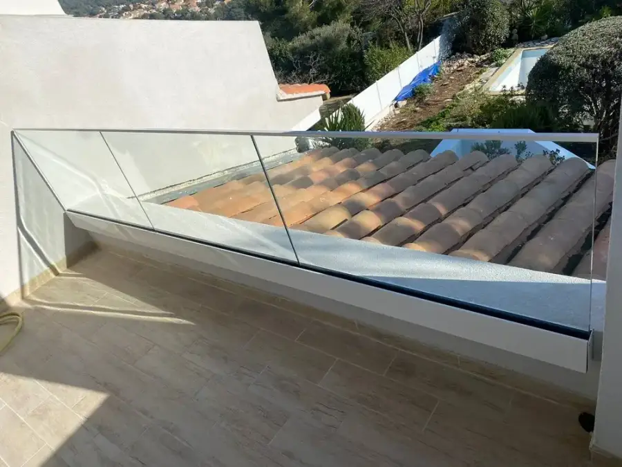
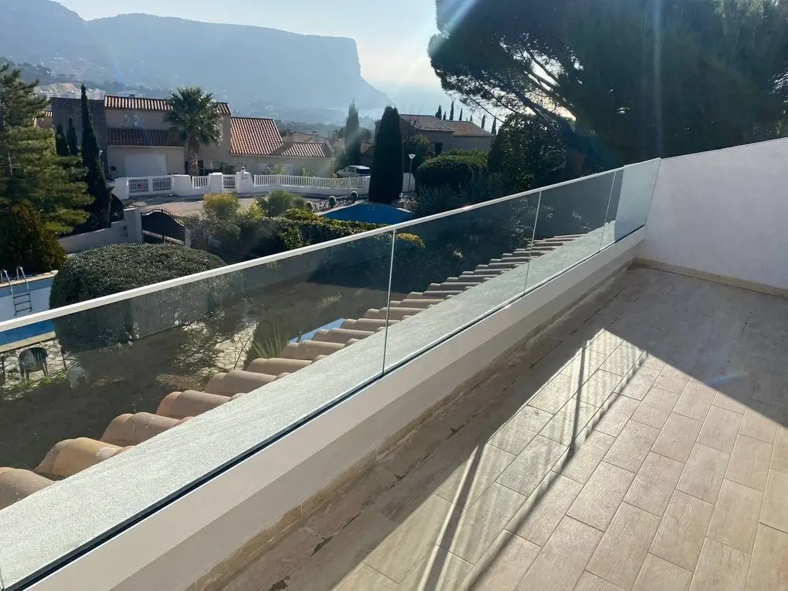

Le garde-corps en verre à Marseille est devenu la référence pour sécuriser une terrasse, un balcon ou un escalier sans casser la vue. Face à la mer ou sur une villa contemporaine, le verre laisse passer la lumière et disparaît presque, là où un garde-corps plein fermerait l'espace. Mais entre les types de fixation, l'épaisseur du verre et les normes de sécurité, les prix varient beaucoup. Ce guide réunit l'essentiel : combien coûte un garde-corps en verre posé, quels modèles existent, ce que dit la réglementation, et comment faire le bon choix.

- Le prix d'un garde-corps en verre posé
- Ce qui fait varier le prix
- Les types de garde-corps en verre
- Normes et sécurité : ce qu'impose la loi
- Quel verre choisir
- Le garde-corps verre à Marseille : mer, vent, soleil
- Entretien et durabilité
- Combien de temps pour la pose ?
- Nos conseils d'artisan
- Foire aux questions
Le prix d'un garde-corps en verre posé
Voici des fourchettes indicatives, pose comprise, exprimées au mètre linéaire, constatées à Marseille pour du verre de sécurité de qualité courante. Seul un devis après visite donne un prix juste : hauteur, fixation et accès changent tout.
Fourchettes de prix selon le type de fixation
| Type de garde-corps | Fixation | Prix posé (par mètre linéaire) |
|---|---|---|
| Verre sur pinces / poteaux inox | Sur le sol ou en applique | 350 – 550 € |
| Verre sur platines visibles | Au sol, platines apparentes | 450 – 700 € |
| Tout verre sur profil bas | Rail continu, sans poteau | 600 – 900 € |
| Tout verre encastré | Rail noyé dans la dalle | 900 – 1 300 € |
Ce que comprend (ou pas) le devis
Un prix au mètre ne veut rien dire sans le détail. Vérifiez toujours ce qui est inclus :
- La fourniture du verre feuilleté sur mesure et de la visserie/inox.
- La pose complète : perçage, chevillage, réglage à l'aplomb, calfeutrement.
- La main courante éventuelle (souvent en option, elle change le prix).
- La prise de cotes sur mesure et la conformité à la hauteur réglementaire.
Ce qui fait varier le prix
À longueur égale, deux devis peuvent différer sensiblement. Voici les principaux leviers.
Le type de fixation et la présence de poteaux
- Une fixation sur pinces ou poteaux inox est la plus économique.
- Un système tout verre (sans poteau, verre autoportant) est plus cher mais bien plus épuré.
- Le rail encastré dans la dalle offre le rendu le plus pur… et le tarif le plus élevé.
L'épaisseur du verre et la hauteur
- Plus le garde-corps est haut et autoportant, plus le verre doit être épais (donc cher).
- Un verre feuilleté renforcé pour un système sans poteau coûte davantage.
- Les grandes longueurs et les angles multiplient les découpes sur mesure.
Les finitions et options
- La main courante (inox, bois, alu) en tête de verre est un poste à part entière.
- Le verre extra-clair, dépoli ou teinté fait évoluer le prix.
- La qualité de l'inox (304 ou 316 marine) influe sur le coût et la tenue dans le temps.

Les types de garde-corps en verre
On distingue plusieurs familles, du plus abordable au plus haut de gamme.
| Type | Aspect | Budget |
|---|---|---|
| Verre + poteaux inox | Poteaux visibles réguliers | € |
| Verre sur pinces | Petites fixations discrètes | €€ |
| Tout verre sur profil | Ligne continue, sans poteau | €€€ |
| Tout verre encastré | Verre qui semble flotter | €€€€ |
Le bon choix dépend de votre support (dalle, balcon, escalier), du rendu voulu et du budget. On en discute lors de la visite : découvrez notre service de pose de garde-corps en verre et nos réalisations.
Normes et sécurité : ce qu'impose la loi
Un garde-corps n'est pas qu'un objet déco : c'est un élément de sécurité encadré par la norme NF P01-012. La respecter n'est pas négociable, et c'est le rôle de l'artisan de la garantir.
La hauteur réglementaire
- En habitation, la hauteur minimale est d'1 mètre depuis le sol fini.¹
- Dans un escalier, elle peut descendre à 90 cm.
- Dans un établissement recevant du public (ERP), la hauteur passe à 1,10 m.
Le verre de sécurité obligatoire
- Le panneau doit être en verre feuilleté de sécurité : en cas de choc, les éclats restent collés au film intercalaire.
- Le garde-corps doit résister à la poussée d'une personne (effort horizontal) sans céder.
- L'espacement et le remplissage doivent empêcher le passage ou l'escalade, notamment pour la sécurité des enfants.
Confier la pose à un professionnel, c'est s'assurer que ces règles sont respectées, du dimensionnement du verre au serrage des fixations. En savoir plus sur l'artisan.
Quel verre choisir ?
Le verre feuilleté est la base, mais plusieurs finitions existent selon l'usage et le style.
- Feuilleté clair : le standard, transparent, pour préserver la vue.
- Extra-clair : sans reflet verdâtre, pour un rendu très pur (un peu plus cher).
- Dépoli / sablé : translucide, pour préserver l'intimité d'un balcon vis-à-vis.
- Teinté ou fumé : pour un effet design ou pour limiter l'éblouissement plein sud.
Le garde-corps verre à Marseille : mer, vent, soleil
Le contexte local a de vraies conséquences sur le choix du matériel.
Bord de mer : l'inox marine s'impose
- À proximité de la mer, l'air salin est corrosif : on privilégie l'inox 316 (marine) pour les pinces et poteaux.
- Un inox standard peut piquer et rouiller en quelques années sur le littoral.
- La visserie et les fixations doivent être choisies en conséquence : c'est un détail qui fait la durabilité.
Mistral et forte luminosité
- Le garde-corps doit être dimensionné pour la prise au vent, surtout en tout verre autoportant sur une terrasse exposée.
- Un verre teinté ou extra-clair se choisit aussi selon l'exposition et l'éblouissement.
- Une pose soignée et des fixations adaptées encaissent le mistral sans vibration.
Envie d'un prix précis pour votre garde-corps en verre ?
Je viens prendre les cotes et je vous remets un devis clair et gratuit sous 48 h, à Marseille et dans les Bouches-du-Rhône et le Var.
Demander mon devis gratuitEntretien et durabilité
- Nettoyage : un lavage à l'eau savonneuse suffit : le verre reste net et l'inox brillant.
- Contrôle : un coup d'œil de temps en temps sur les fixations garantit la sécurité dans la durée.
- Durée de vie : un garde-corps en verre bien posé, avec le bon inox, dure des décennies sans se démoder.
Combien de temps pour la pose ?
- La prise de cotes précède la fabrication sur mesure du verre : comptez un délai de fabrication.
- La pose d'un garde-corps de balcon ou de terrasse se fait en général en une demi-journée à une journée.
- On fixe la date ensemble après validation du devis, et le chantier est laissé propre en fin d'intervention.
Nos conseils d'artisan pour bien acheter
- Exigez un devis détaillé (verre feuilleté, inox, main courante, pose) plutôt qu'un prix au mètre flou.
- Vérifiez que la hauteur réglementaire et le verre de sécurité sont bien prévus : c'est non négociable.
- Au bord de mer, imposez l'inox 316 marine pour éviter la corrosion.
- Choisissez la fixation selon le rendu voulu (poteaux économiques ou tout verre épuré) et le support.
- Privilégiez un artisan local, qui prend les cotes lui-même et assure le suivi.
Foire aux questions
Quel est le prix d'un garde-corps en verre à Marseille ?
Comptez en moyenne 350 à 900 € par mètre linéaire posé, selon le type de fixation, l'épaisseur du verre et la présence d'une main courante. Un garde-corps tout verre haut de gamme, à fixation encastrée, peut dépasser 1 000 € le mètre.
Quelle est la hauteur réglementaire d'un garde-corps en verre ?
En habitation, la norme NF P01-012 impose une hauteur d'au moins 1 mètre depuis le sol fini. Elle peut descendre à 90 cm dans un escalier, et passe à 1,10 m dans les établissements recevant du public.
Le verre d'un garde-corps est-il vraiment sûr ?
Oui, à condition d'utiliser un verre feuilleté de sécurité. En cas de choc, les morceaux restent collés au film intercalaire et le panneau conserve sa fonction de protection. C'est ce type de verre qui est mis en œuvre pour un garde-corps conforme.
Un garde-corps en verre résiste-t-il au vent et au bord de mer ?
Oui. Dimensionné pour la prise au vent et posé avec des fixations en inox adaptées, il résiste au mistral et à l'air marin. Les profils et pinces en inox 316 sont recommandés à proximité de la mer pour éviter la corrosion.
En résumé
À Marseille, un garde-corps en verre coûte le plus souvent entre 350 € (verre sur poteaux) et 1 300 € le mètre (tout verre encastré), pose comprise. Le vrai réflexe : un devis détaillé, une hauteur conforme à la norme NF P01-012, du verre feuilleté et le bon inox au bord de mer. Vous avez un projet ? Demandez votre devis gratuit, je prends les cotes et je vous conseille la solution la plus adaptée.
Sources
- Norme NF P01-012 relative aux dimensions des garde-corps (hauteur minimale de protection, habitation et ERP).¹ Hauteur réglementaire d'un garde-corps en verre.